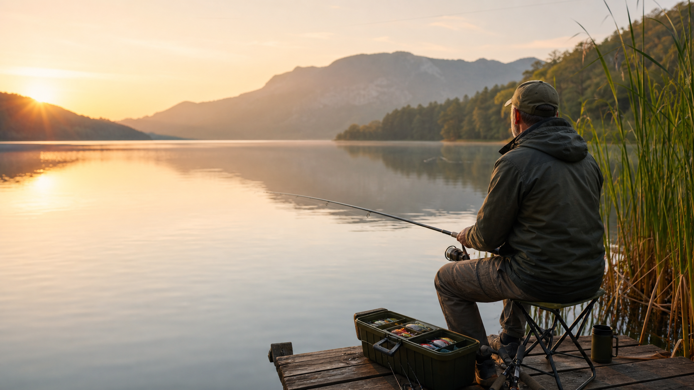
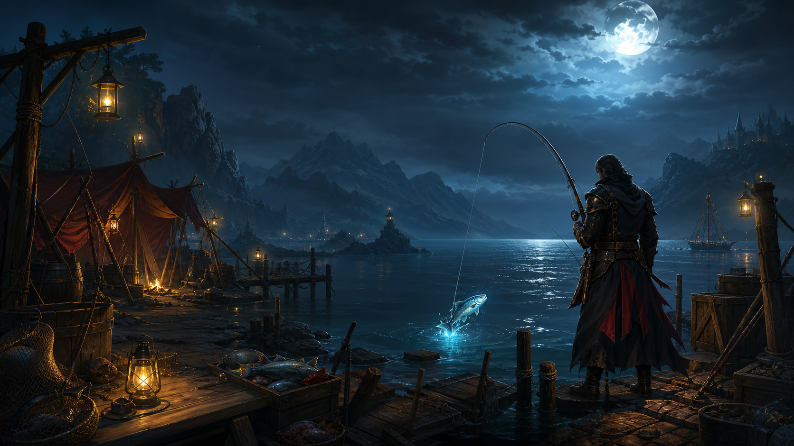
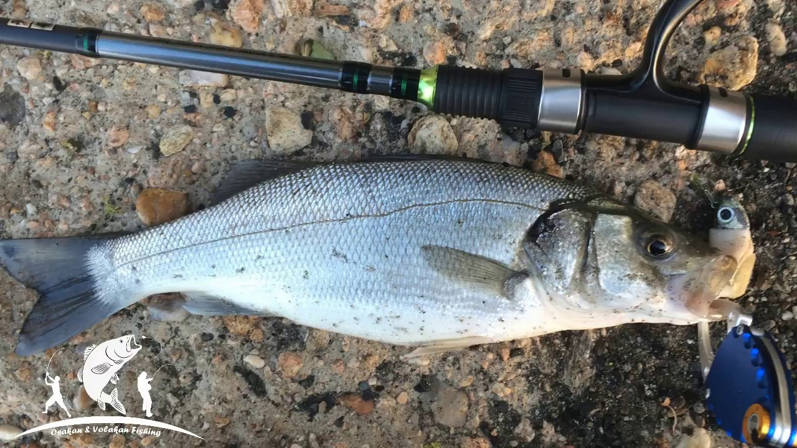
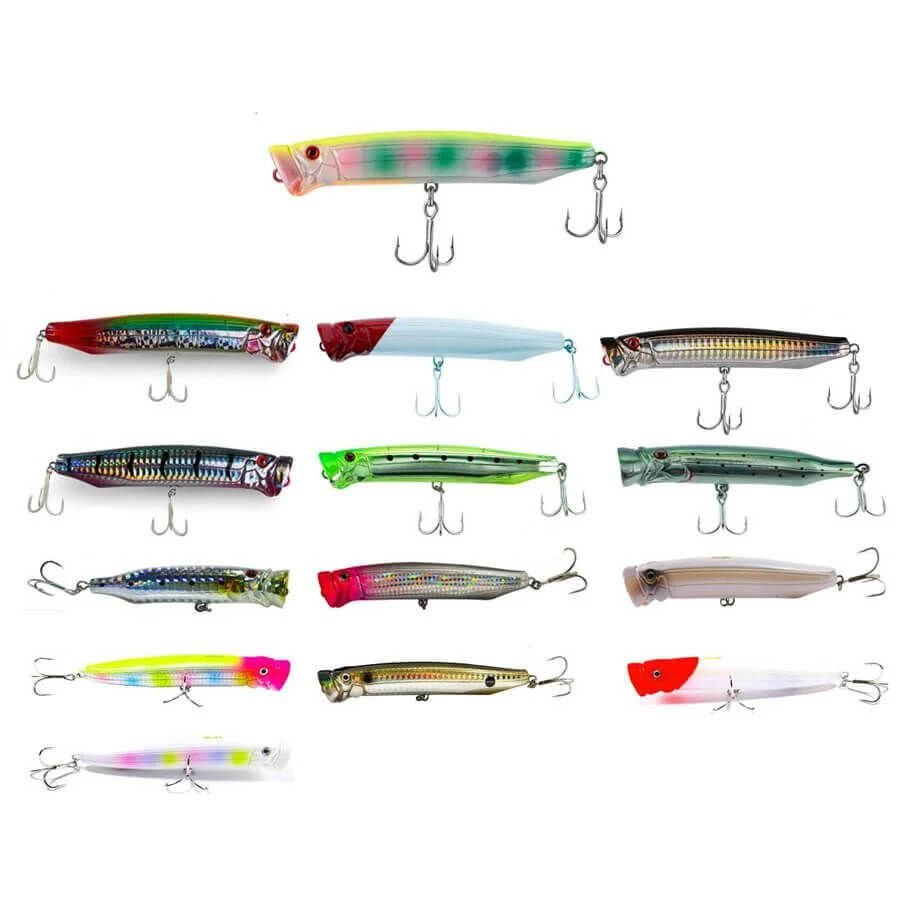
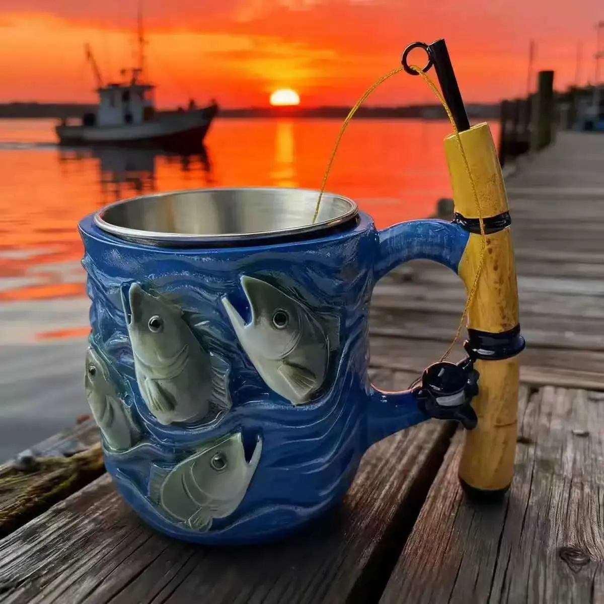

Fishing Gallery & Moments
Explore our fishing memories, high-tech gear close-ups, and the breathtaking nature views from our favorite fishing spots.
1. Trophy Catches

Early Morning Seabass - Caught using a shallow minnow lure at sunrise.

Midnight Bluefish - Fierce predator fought well on a spin rod.

Recent Catch - Premium fish specimen caught with live bait.
2. Tackle & Gear Setups

Weekend Essentials - Organizing silicone lures, jigs, and fluorocarbon lines.

Saltwater Spinning Reel - Freshly rinsed and ready for the next big run.

Hard Bait Selection - Topwater poppers and diving minnows for seabass.
3. Scenery & Secret Spots

The Golden Hour - Calm seas and high hopes just before twilight.

Rocky Coastline - The perfect structure for Light Rock Fishing.

Angler's Camp - Hot coffee by the fire while waiting for the bite.